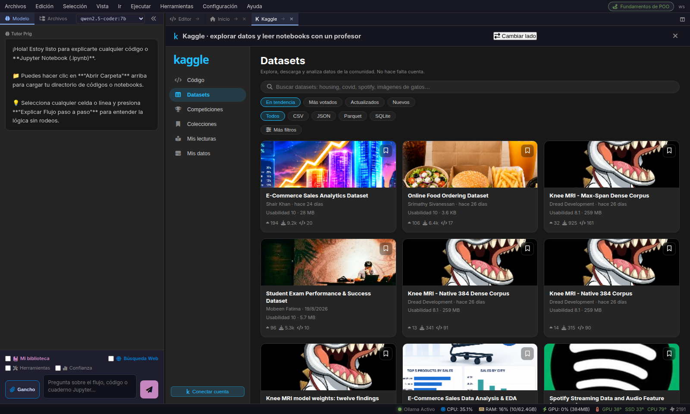
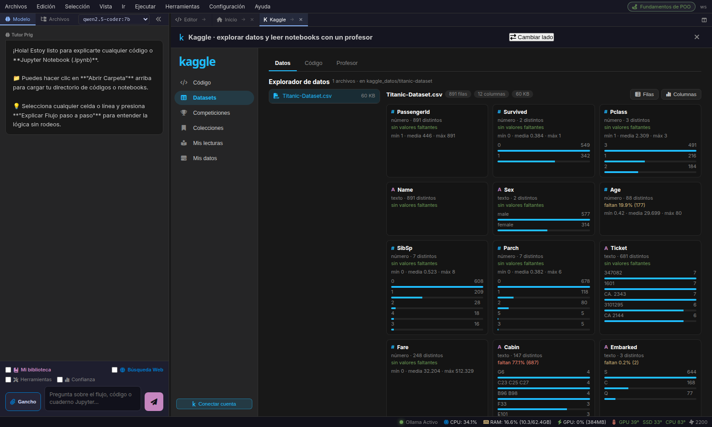

Prig conecta directamente con la API oficial de Kaggle. Busca y descarga datasets públicos sin salir del editor, ejecuta kernels de la comunidad con reescritura transparente de rutas /kaggle/input/, e inspecciona soluciones ganadoras con el Director IA 7B.
/kaggle/input/titanic/train.csv → <proyecto>/kaggle_datos/titanic/train.csvDiseñado para investigar, probar hipótesis y entrenar modelos con máxima velocidad y cero fricción.
Explora millones de datasets por relevancia, votos o popularidad. Descarga y descomprime automáticamente archivos CSV, Parquet, JSON o bases SQLite en segundo plano.
DATASET DOWNLOADER
Los notebooks de Kaggle usan rutas canónicas /kaggle/input/<dataset>/. Prig las mapea automáticamente a tu disco local para que el código corra tal cual vino de la web.
El Director LLM 7B desglosa cada celda de notebooks de Grandmasters de Kaggle: explica la ingeniería de features, el pipeline de preprocesamiento y el ensamblado de modelos.
GRANDMASTER EXPLAINERVisualizador tabular de alta velocidad con cálculo de estadísticas descriptivas, tipos de datos, cardinalidad y detección de valores nulos antes de cargar en RAM.
SCHEMA & STATS VIEWERMonitorea competiciones activas (Featured, Playground, Research, Getting Started), fechas límite, premios y reglas sin abrir el navegador.
COMPETITIONS TRACKERAplica directamente implementaciones de referencia de Transformers, DDPM (Difusión), XGBoost, LightGBM, ResNet, PCA y t-SNE sobre tus datasets descargados.
21 ML ALGORITHMSPrig elimina la necesidad de reescribir manualmente las rutas de archivos en los notebooks que descargas.
Cuando descargas un dataset desde el explorador, Prig lo almacena en <tu_proyecto>/kaggle_datos/<slug>/.
Al abrir y ejecutar un notebook de Kaggle, el intérprete redirige cualquier llamada a pd.read_csv('/kaggle/input/...') hacia la copia local sin romper la reproducibilidad del código.
Haz clic en cualquier captura para ampliarla con el visor Lightbox.

Búsqueda en tiempo real conectada a la API de Kaggle, filtros por etiquetas y descarga en 1 clic lista para entrenar.

Inspección de código ganador, kernels populares de la comunidad y desglose didáctico asistido por IA.